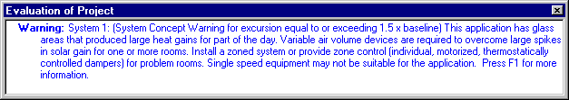

System Concept Warnings |
  
|
System Concept Warnings |
|
System Concept Warnings are messages that alert you when a system has excursion, and are provided to assist you in choosing the best kind of equipment to install in order to provide maximum comfort throughout the day. These warnings are optional and can be turned off on the Rhvac Options dialog. Shown below is the Evaluation of Project window with one of the possible messages.

There are two possible warnings that can be displayed when a system has excursion (also called "AED excursion"). The one shown in the above picture is for when the excursion is between 1.3 and 1.5 times the 12-hour fenestration gain average. The other warning is shown when the excursion exceeds 1.5 times the average. Below is an in depth explanation of the two possible messages from Manual J Addendum B:
Trigger Condition for Flag |
Message |
||
Message A |
Excursion greater than (1.3 x baseline) and less than (1.5 x baseline). |
This application has glass areas that produced relatively large heat gains for part of the day. Variable air volume devices may be required to overcome spikes in solar gain for one or more rooms. A zoned system may be required, or some rooms may require zone control (provided by individual, motorized, thermostatically controlled dampers). |
|
Message B |
Excursion equals or exceeds (1.5 x baseline). |
This application has glass areas that produced large heat gains for part of the day. Variable air volume devices are required to overcome large spikes in solar gain for one or more rooms. Install a zoned system or provide zone control (individual, motorized, thermostatically controlled dampers) for problem rooms. Single speed equipment may not be suitable for the application. |
|
Guidance Notes: |
Note for Message A: A spike in the hourly fenestration (glass) gain has exceeded the acceptable limit for a single-zone constant volume system. This may cause several rooms to be more than 3 degrees warmer than the set point at the central thermostat, which is not acceptable (see ACCA Manual RS, Section 1). This warning may indicate that there is an error in the heat gain estimate. Make sure the input for windows, glass doors and skylights is correct (verify inputs for fenestration areas, fenestration U-values and SHGF, overhangs, bug screens, sunscreens and credit for internal shading). If the heat gain estimate inputs are correct, the warning indicates that the dwelling may have an above average fenestration (glass) gain on one or more exposures, which means that some type of zoning should be considered for these areas. (Thermostatically controlled dampers can be used to increase airflow to problem areas when solar gains peak.) Note: If all the fenestration is concentrated on one or two critical exposures (a condominium facing West, for example), there will be significant swings in the cooling load during a 24-hour day, which means that single-speed equipment will short -cycle for much of an average day. Short cycling may cause an unacceptable humidity level within the conditioned space if the dwelling has a significant latent gain. (Humidity control is not a problem for dry-climate applications.) Such applications may require multi-speed or variable speed equipment that provides adequate latent capacity when operating at reduced speed. (Zoning may not be required if all rooms experience a peak gain at about the same time of day.) Note for Message B: A spike in the hourly fenestration (glass) gain is much larger than the acceptable limit for a single zone constant volume system. Use of a conventional constant volume system will cause several rooms to be more than 3 degrees warmer than the set point at the central thermostat, which is not acceptable (see ACCA Manual RS, Section 1). This warning may indicate that there is an error in the heat gain estimate. Make sure the input for windows, glass doors and skylights is correct (verify inputs for fenestration areas, fenestration U-values and SHGF, overhangs, bug screens, sunscreens and credit for internal shading). If the heat gain estimate is correct, the warning indicates that the dwelling has a large spike in the fenestration (glass) gain for one or more exposures, which means that some type of zoning is required for problem areas. (Thermostatically controlled dampers should be used to increase airflow to these areas when solar gains peak.) Note: If all the fenestration is concentrated on one or two critical exposures (a condominium facing West, for example), there will be large swings in the cooling load during a 24-hour day, which means that single-speed equipment will short - cycle for much of an average day. Short cycling may cause an unacceptable humidity level within the conditioned space if the dwelling has a significant latent gain. (Humidity control is not a problem for dry-climate applications.) Such applications may require multi-speed or variable speed equipment that provides adequate latent capacity when operating at reduced speed. (Zoning may not be required if all rooms experience a peak gain at about the same time of day.) Trouble Shooting Checklist ·Make sure load estimate is correct (verify inputs for fenestration areas, fenestration U-values and SHGF, overhangs, bug screens, sun screens and credit for internal shading) ·Ask the client to install more internal external shading, ·If possible, have the client install sunscreens or effective overhangs. ·If possible, have the client reduce the size of the fenestration that is causing the problem. ·If possible, have the client use high performance glass (low SHGC) for the fenestration that is causing the problem. ·Ask the client for permission to install undersize single-speed equipment -- for better humidity control -- and accept the indoor temperature swing (at the thermostat) and when the local weather simulates the summer design condition. ·Inform the client that a variable air volume system provides zone control for applications that have fenestration gains that peak at different times of day. ·Inform the client that variable speed or multi-speed equipment is recommended for applications that have large temperature swings. ·For humid climates, variable speed or multi-speed equipment shall have adequate latent capacity at part load conditions (see the MJ8 Introduction, Figure 1, page II). In other words, latent capacity shall not substantially decrease when operating at reduced speed (refer to manufacturer performance data for full speed and reduced speed operation). |
||